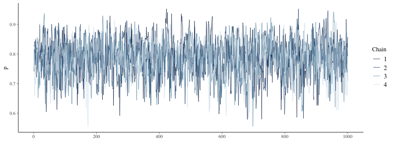
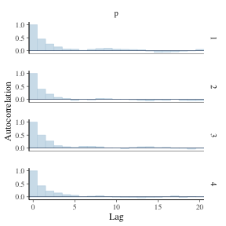
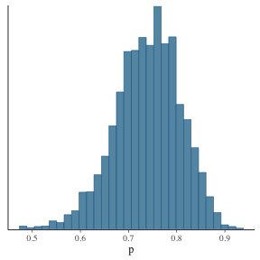
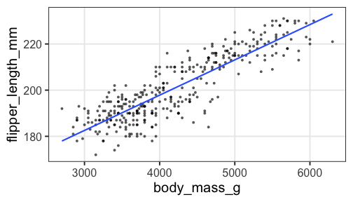
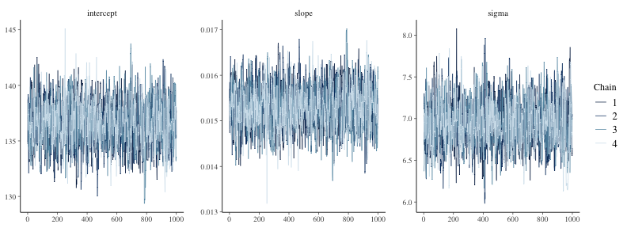
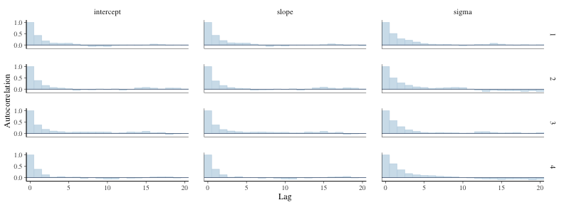
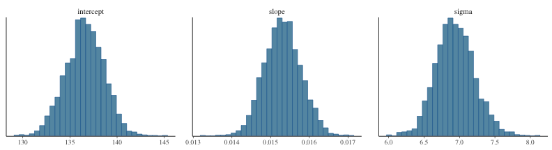
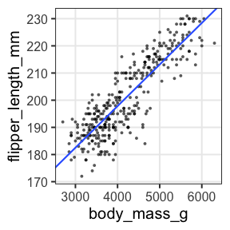
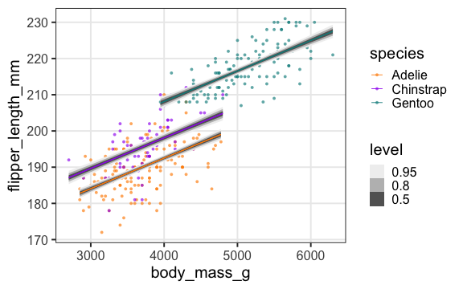

統計モデリング概論 DSHC 2022
(Graduate School of Life Sciences, Tohoku University)
Stan
- Stan言語でモデルを書く
- C++を介して機械語に翻訳(コンパイル)するので高速
- RやPythonなどから呼び出して使うのが便利
大部分はRで説明し、部分的にPythonでの練習を挟みます。
聞きながら手元でtokiomarine2022-stan.ipynbを実行してもいいです。
# install.packages("rstan")
library(rstan)
rstan_options(auto_write = TRUE)
おおまかな流れ
# データ準備
mydata
# Stan言語で書いたモデルをコンパイル
model = rstan::stan_model(file = "model.stan")
# MCMCサンプリング
fit = rstan::sampling(model, data = mydata)
# 結果を眺める
print(fit)
rstan::stan_trace(fit)
rstan::stan_hist(fit)
rstan::stan_ac(fit)
説明変数なしのベイズ推定: データ準備
表が出る確率 $p=0.7$ のイカサマコインをN回投げたデータを作る。
この $p$ をStanで推定してみよう。
true_p = 0.7
N = 40L
mydata = list(N = N, x = rbinom(N, 1, true_p))
print(mydata)
$N
[1] 40
$x
[1] 0 0 1 0 1 1 0 1 1 0 1 0 0 1 1 0 0 1 1 1 0 1 0 0 1 1 1 0 1 0 0 0 1 1 1 0 1 1 0 1
Rならlist型、Pythonならdict型にまとめてStanに渡す。
説明変数なしのベイズ推定: Stan言語でモデル定義
文字列として保持するか、別ファイルに書いておく:
data {
int<lower=0> N;
int x[N];
}
parameters {
real<lower=0,upper=1> p;
}
model {
x ~ binomial(1, p);
}
- いくつかのブロックに分けて記述する:
R/Pythonから受け取るdata, 推定するparameter, 本体のmodel. - 整数型
int, 実数型real, それらの配列がある。 - 下限
lower, 上限upperを設定できる。
Stan言語の7種のブロック
順番厳守。よく使うのは太字のやつ。
functions {...}data {...}transformed data {...}parameters {...}transformed parameters {...}model {...}generated quantities {...}
https://mc-stan.org/docs/reference-manual/overview-of-stans-program-blocks.html
説明変数なしのベイズ推定: MCMCサンプル
予め実行速度の速い機械語に翻訳(コンパイル):
model = rstan::stan_model("binom.stan")
これに結構時間がかかるので、変更が無ければ再利用するため先ほど
rstan_options(auto_write = TRUE) しておいた。
モデルとデータを使ってMCMCサンプリング:
fit = rstan::sampling(model, data = mydata)
いろいろオプションはあるけどとりあえずデフォルトで:
chains = 4, iter = 2000, warmup = floor(iter/2), thin = 1, …
問題があったら実行終了時に警告してくれるのでちゃんと読む。
説明変数なしのベイズ推定: 結果を眺める
$\hat R$ もほぼ1で $N_\text{eff}$ も大きいのでよさそう。
念のため trace plot も確認しておこう。
print(fit)
Inference for Stan model: binom.
4 chains, each with iter=2000; warmup=1000; thin=1;
post-warmup draws per chain=1000, total post-warmup draws=4000.
mean se_mean sd 2.5% 25% 50% 75% 97.5% n_eff Rhat
p 0.55 0.00 0.08 0.39 0.50 0.55 0.60 0.69 1651 1
lp__ -29.45 0.02 0.76 -31.61 -29.61 -29.16 -28.97 -28.92 1262 1
Samples were drawn using NUTS(diag_e) at Wed Jun 8 09:32:06 2022.
For each parameter, n_eff is a crude measure of effective sample size,
and Rhat is the potential scale reduction factor on split chains (at
convergence, Rhat=1).
乱数を使った計算なので(乱数シードを固定しない限り)毎回変わる。
説明変数なしのベイズ推定: trace plot 確認
どのchainも似た範囲を動いていて、しっかり毛虫っぽい:
rstan::stan_trace(fit)

説明変数なしのベイズ推定: 自己相関の確認
2–3ステップくらいで自己相関がほぼ消えるので問題なし:
rstan::stan_ac(fit, pars = c("p"))

説明変数なしのベイズ推定: 推定結果確認
サンプルサイズNが小さいせいか裾野の広い推定結果。
真の$p$の値も含まれている:
rstan::stan_hist(fit, bins = 30)

次はもう少しだけ複雑な例を見てみよう。
線形回帰のベイズ推定: データ準備
https://allisonhorst.github.io/palmerpenguins/


線形回帰のベイズ推定: データ準備
https://allisonhorst.github.io/palmerpenguins/
Stan does not support NA と怒られるので欠損値を取り除いておく:
List of 3
$ body_mass_g : int [1:342] 3750 3800 3250 3450 3650 3625 4675 3475 4250 3300 ...
$ flipper_length_mm: int [1:342] 181 186 195 193 190 181 195 193 190 186 ...
$ N : int 342
単回帰のベイズ推定: Stan言語でモデル定義
切片、傾き、ばらつきを推定する:
data {
int<lower=0> N;
vector<lower=0>[N] body_mass_g;
vector<lower=0>[N] flipper_length_mm;
}
parameters {
real intercept;
real slope;
real<lower=0> sigma;
}
model {
flipper_length_mm ~ normal(intercept + slope * body_mass_g, sigma);
}
単回帰のベイズ推定: MCMCサンプル
予め実行速度の速い機械語に翻訳(コンパイル):
model = rstan::stan_model("penguins.stan")
モデルとデータを使ってMCMCサンプリング:
fit = rstan::sampling(model, data = mydata)
いろいろオプションはあるけどとりあえずデフォルトで:
chains = 4, iter = 2000, warmup = floor(iter/2), thin = 1, …
問題があったら実行終了時に警告してくれるのでちゃんと読む。
単回帰のベイズ推定: 結果を眺める
$\hat R$ もほぼ1で $N_\text{eff}$ も大きいのでよさそう。
念のため trace plot も確認しておこう。
print(fit)
Inference for Stan model: penguins.
4 chains, each with iter=2000; warmup=1000; thin=1;
post-warmup draws per chain=1000, total post-warmup draws=4000.
mean se_mean sd 2.5% 25% 50% 75% 97.5% n_eff Rhat
intercept 136.76 0.05 1.97 132.89 135.40 136.75 138.04 140.67 1506 1
slope 0.02 0.00 0.00 0.01 0.01 0.02 0.02 0.02 1526 1
sigma 6.94 0.01 0.27 6.41 6.76 6.94 7.13 7.47 1198 1
lp__ -830.83 0.04 1.24 -834.08 -831.39 -830.51 -829.93 -829.43 1120 1
Samples were drawn using NUTS(diag_e) at Wed Jun 8 09:32:31 2022.
For each parameter, n_eff is a crude measure of effective sample size,
and Rhat is the potential scale reduction factor on split chains (at
convergence, Rhat=1).
単回帰のベイズ推定: trace plot 確認
どのchainも似た範囲を動いていて、しっかり毛虫っぽい:
rstan::stan_trace(fit)

単回帰のベイズ推定: 自己相関の確認
どれもまあまあすぐ消えるので問題なし:
rstan::stan_ac(fit, pars = c("intercept", "slope", "sigma"))

単回帰のベイズ推定: 推定結果確認
正規分布っぽいきれいな形:
rstan::stan_hist(fit, bins = 30)

これらの値を使って点推定・区間推定も可能。
単回帰のベイズ推定: 推定結果で回帰
無事に最尤推定と似たような線が引けた。
coef = rstan::get_posterior_mean(fit)[, "mean-all chains"]
p_penweight +
geom_abline(intercept = coef["intercept"], slope = coef["slope"], size = 1, color = "#3366ff")

🔰 単回帰の練習問題
TODO
☕️ 休憩 + 質疑応答
Stanで重回帰
TODO
fit = rstanarm::stan_glm(flipper_length_mm ~ body_mass_g + species, family = gaussian(), data = penguins)
pred = penguins %>% tidyr::drop_na() %>% tidybayes::add_fitted_draws(fit)
p_penweight + aes(color = species, group = species) +
ggdist::stat_lineribbon(aes(y = .value), data = pred, size = 0.4) +
scale_color_manual(values = penguins_colors) +
scale_fill_brewer(palette = "Greys")

🔰 Stanで重回帰の練習問題
TODO
☕️ 休憩 + 質疑応答
Stanでポアソン回帰
TODO

🔰 Stanでポアソン回帰の練習問題
TODO
☕️ 休憩 + 質疑応答
Stanでロジスティック回帰
TODO

🔰 Stanでロジスティック回帰
TODO
☕️ 休憩 + 質疑応答
参考文献
- データ解析のための統計モデリング入門 久保拓弥 2012
- StanとRでベイズ統計モデリング 松浦健太郎 2016
- RとStanではじめる ベイズ統計モデリングによるデータ分析入門 馬場真哉 2019
- データ分析のための数理モデル入門 江崎貴裕 2020
- 分析者のためのデータ解釈学入門 江崎貴裕 2020
- 統計学を哲学する 大塚淳 2020